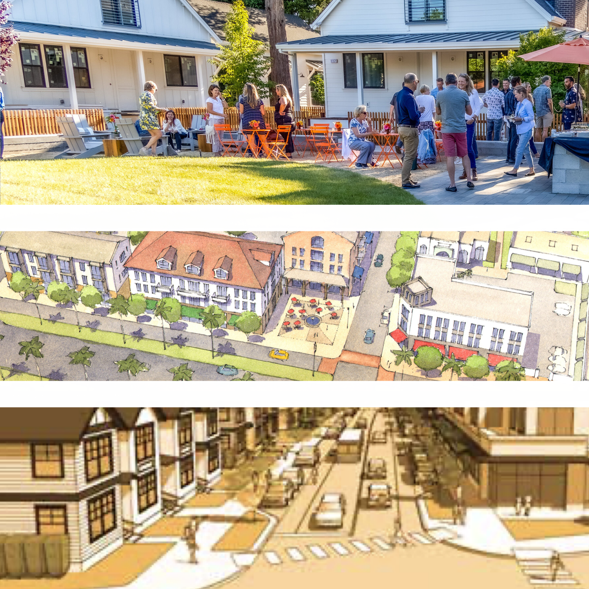

Tell City Council to Vote YES on ALL FIVE Pro-Housing Measures on February 11th, for a Little More Housing Everywhere in Asheville
We sent the letter below to Asheville City Council on February 10th.
Want to learn more about pro-housing actions that you can take with us in the future? Sign up for our email list here.

One Night; Five Votes
A package of pro-housing reforms is getting a hearing in front of Asheville City Council this month. We need YOU to let City Council that they need to vote YES.
The five reforms on the agenda for February 11th all update the city’s Unified Development Ordinance (UDO)—its zoning code—in different ways:
Commercial Corridor Reforms
Residential Neighborhood Reforms
(For more details on the first three items, you can read Asheville For All’s recap of the January Asheville Planning and Zoning Commission meeting. For more on flag lots, you can check out this blog post from 2023.)
Open Letter to Asheville City Council
Dear City Council,
We urge you to pass all five pro-housing-infill UDO amendments on February 11th. Added up together, these modest revisions will allow a little more housing to be built everywhere in the city, and will especially promote more infill in the most high-demand, high-amenity neighborhoods and corridors.
Unlocking the ability to build a little more housing everywhere is a key to promoting equitable growth, preventing displacement, and lowering housing costs for all kinds of working people and their families.
We know that simply targeting one kind of neighborhood or corridor for growth, while freezing most of the city for the status quo, simply doesn’t deliver the benefits we need. In the past, so-called “opportunity zones” have resulted in displacement and speculation. And the “grand bargains” that keep wealthy residential neighborhoods off limits to growth have only promoted segregation, sprawl, and “opportunity hoarding.”1
On the other hand, allowing for infill broadly, and including high-amenity, high-demand areas, is the best proven way to combat the housing shortage.2
It is fortunate—and a testament to the city staff’s efforts—that these five UDO amendments have landed on a single City Council agenda. Taken together, they will bring us one step closer to a more equitable housing market and a more livable city.
* * *
Added together, these five new UDO revisions will:
- Promote more desperately needed housing of all shapes and sizes without contributing to sprawl
- Promote greater transit viability on our transit-supportive corridors
- Promote more attainable neighborhood-scale homes for first-time homebuyers
- Prevent displacement from vulnerable neighborhoods by unlocking infill capacity at a scale broad enough to temper land-value shocks and speculation
- Further aid particularly vulnerable working individuals and families at risk of displacement because of our housing shortage by promoting the faster construction of more below-market-rate homes
* * *
The combination of all five of these amendments is essential. Parking reform unlocks the potential for the commercial zoning code changes to have an impact, for example. And the anti-displacement attributes of the threshold reform, as well as the broad nature of all five reforms taken together, means that the modest proposed changes to residential neighborhoods—though they were never likely to exacerbate displacement—are even more of a sure thing.3 On the other hand, small lot and missing-middle-related reforms for residential neighborhoods are likely to open up more ownership options and opportunities for a wider variety of working families than commercial corridor reform will alone.
After the passage of these five UDO amendments, there will still be work to do. More missing-middle-related reforms must come as quick as possible for Ashevilleans of ALL kinds of working backgrounds to be able to find and afford housing in the city. And as recommended by the September 2024 Affordable Housing Plan, the city must restore the Land Use Incentive Grant (LUIG) in order to make the development of more below-market-rent homes more viable without putting the cost of such homes on the backs of renters.4
But these five amendments are a big step in the right direction. We will be excited to see the enormous work of city staff, the Planning and Zoning Commission, and City Council on this matter reach a positive outcome on February 11th.
Thank you again for all that you do,
Asheville For All Lead Organizers
-
Funnily, the phrase “grand bargain,” a way to describe typical exclusionary land use policy, was used recently in an unlikely pair of places: the left-wing Jacobin magazine, and the more ecumenical Strong Towns. Both sources point to the problems with upzoning corridors and/or relegating high density growth to urban peripheries without addressing “missing middle” and small lot infill reforms for residential neighborhoods. Richard Reeves coined the phrase "opportunity hoarding" to describe exclusionary land use policies. ↩︎
-
Asheville’s 2023 Missing Middle Housing Study’s Displacement Risk Assessment, p. 97, stresses the case for broad upzoning as an anti-displacement measure. See also: Shane Phillips, Building Up the Zoning Buffer; Daniel Herriges, “What Would Mass Upzoning Actually Do to Property Values?”; Vicki Been et al., “Supply Skepticism Revisited,” pp. 37-42, 44; Simon Büchler and Elena Lutz, “Making Housing Affordable? The Local Effects of Relaxing Land-Use Regulation,” pp. 9-10. ↩︎
-
Raising the topics of displacement and gentrification often conjures boogeymen, and we acknowledge that these boogeymen can constitute real political obstacles for city leaders. But the most up-to-date research on these topics is clear: broadly implemented “missing middle” and small lot reforms do not exacerbate displacement, and all of Asheville’s own studies on this topic recommend broad “missing middle” reforms as a means to combat displacement and strengthen vulnerable neighborhoods. ↩︎
-
To understand why we believe that the cost of below-market-rate homes should be borne by programs such as LUIG, please see our recent comment to the Asheville Planning and Zoning Commission, wherein we cite some research from other cities on this subject. ↩︎
Sign the Letter to City Council
This form is no longer active. Stay up to date on future actions by signing up for Asheville For All emails here.